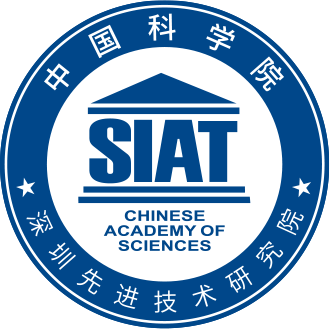

一天一格 / 2027 研考作战表目标 · 中国科学院深圳先进技术研究院
把每一天，落实到位。
10 天打基础，20 天做真题。完成一项，划掉一项。
71天
距初试 · 含今天
今天先完成这件事
基础知识 · 第 1 天
备考全局
点击日期，查看与勾选任务基础知识 · 10 天 10.09—10.18真题日 · 20 天 10.19—11.07待安排 · 41 天 11.08—12.18
预报名 10.09—10.12正式报名 10.15—10.24今天报名每日 9:00—22:00
真题日每天：数学、英语、自动控制原理各 1 张卷10.09 — 12.18 · 共 71 格
初试开始
12 月 19 日，带着准备走进考场。
2026.12.19 — 12.20